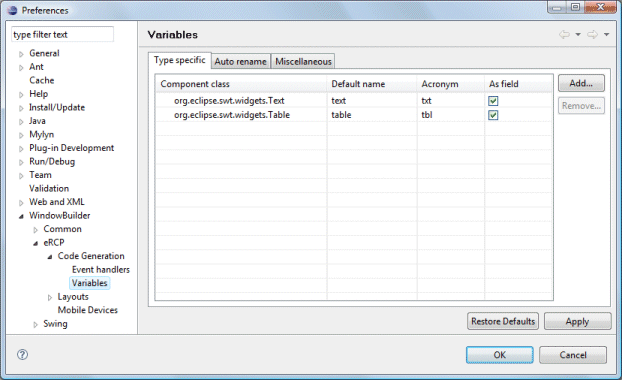
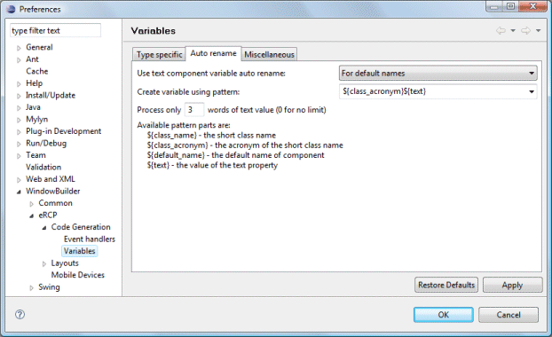
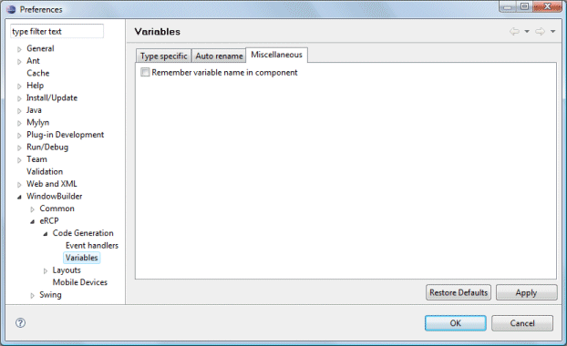

This page is used to control various eRCP > Code Generation >
Variables options.
Type specific There are already several types listed in the table. You can add more types by clicking on the Add button and entering in the name of the class you want to add in the dialog box that appears. To remove a type, highlight it in the table and click on Remove. The Default Name column of the table lets you change what variable name is initially used when a control of that type is created. To change the default name, simply click in the table cell that you wish to modify and type in the name. Press Enter to apply the change or Esc to cancel. Any names that are entered must be valid Java identifiers. The Acronym column of the table lets you specify a short name for the type that is used in automatic variable renaming. Any acronyms that are entered must be valid Java identifiers. The As Field column has a checkbox for each table item. If an item's As Field cell is checked, all new controls of that type will be created as a field. When a control is created as a field, it places the declaration of the control in the class outside of any methods. Auto renameUse text component variable auto renameThis preference determines whether component variable names are renamed based on the value of the text component. This can be set to "Always", "Never" or "For default names". The later means that only components that still have their default names will be renamed. Once renamed, they will not be renamed again. Create variable using patternThis preference determines what pattern is used when creating a new variable name. Available pattern parts are:
Process only n words of text valueThis preference determines how many words from the text component are used when generating the new variable name. Use "0" for no limit. MiscellaneousRemember variable name in componentThis preference determines whether the widget's name in the widget's data using setData("name", "widget-name").. |